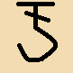
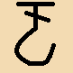
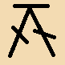
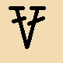
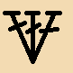

| 針法名稱 | 符號 | 鎖針的高度 | 針法步驟及注意事項 |
| 鎖針 | X | 起針的基礎。 | |
| 短針 | 1個鎖針高度 | 穿洞，鉤出，收2針。 | |
| 中長針 | 2個鎖針高度 | 掛1針，穿洞，鉤出，收3針。 | |
| 長針 | 3個鎖針高度 | 掛1針，穿洞，鉤出，收2針，再收2針。 | |
| 長長針 | 4個鎖針高度 | 掛2針，穿洞，鉤出，收2針，收2針，再收2針。 | |
| 三捲長針 | 5個鎖針高度 | 掛3針，穿洞，鉤出，收2針，收2針，收2針，再收2針(共收4次)。 | |
外鉤長針 (表引長針) |
 | 3個鎖針高度 | 掛1針，從正面挑前段上方全部針腳(由上往下挑)，鉤出較長的線，收2針，再收2針。 |
內鉤長針 (裡引長針) |
 | 3個鎖針高度 | 掛1針，從背面挑前段上方全部針腳(由下往上挑)，鉤出較長的線，收2針，再收2針。 |
| 短針的畝針 | 1個鎖針高度 | 穿洞只穿背面的鎖針半針(裡山)，鉤出，收2針。 ◎因織片呈現凹凸的模樣，看起來像田地，而稱「畝織」 |
|
| 短針之二併針 | 1個鎖針高度 | 穿第一洞，鉤出，穿第二洞，鉤出(此時鉤針上有3個圈)，最後一次收3針。 | |
| 短針之三併針 | 1個鎖針高度 | 穿第一洞，鉤出，穿第二洞，鉤出，穿第3洞，鉤出(此時鉤針上有4個圈)，最後一次收4針。 | |
| 中長針之二併針 | 2個鎖針高度 | 掛1針，穿第一洞，鉤出， 再掛1針，穿第二洞，鉤出(此時鉤針上有5個圈)， 最後一次收5針。 |
|
| 中長針之三併針 | 2個鎖針高度 | 掛1針，穿第一洞，鉤出， 掛1針，穿第二洞，鉤出， 再掛1針，穿第三洞，鉤出(此時鉤針上有7個圈)， 最後一次收7針。 |
|
| 長針之二併針 |  | 3個鎖針高度 | 掛1針，穿第一洞，鉤出，收2針， 再掛1針，穿第二洞，鉤出，收2針(此時鉤針上有3個圈)， 最後一次收3針。 |
| 長針之三併針 | 3個鎖針高度 | 掛1針、穿第一洞、鉤出、收2針，
掛1針、穿第二洞、鉤出、收2針， 再掛1針，穿第三洞，鉤出，收2針(此時鉤針上有4個圈)， 最後一次收4針。 |
|
| 長針之四併針 | 3個鎖針高度 | 掛1針，穿第一洞，鉤出，收2針，
掛1針，穿第二洞，鉤出，收2針， 掛1針，穿第三洞，鉤出，收2針(此時鉤針上有4個圈)， 再掛1針，穿第四洞，鉤出，收2針(此時鉤針上有5個圈)， 最後一次收5針。 |
|
| 短針二針加針 | 1個鎖針高度 | 穿洞，鉤出，收2針，再穿原洞，鉤出，收2針。 | |
| 短針三針加針 | 1個鎖針高度 | 穿洞，鉤出，收2針，穿原洞，鉤出，收2針，
再穿原洞，鉤出，收2針。 |
|
| 中長針二針加針 | 2個鎖針高度 | 掛1針，穿洞，鉤出，收3針，
再掛1針，穿原洞，鉤出，收3針。 |
|
| 中長針三針加針 | 2個鎖針高度 | 掛1針，穿洞，鉤出，收3針，
掛1針，穿原洞，鉤出，收3針， 再掛1針，穿原洞，鉤出，收3針。 |
|
| 長針二針加針 |  | 3個鎖針高度 | 掛1針，穿洞，鉤出，收2針，再收2針，
再掛1針，穿原洞，鉤出，收2針，再收2針。 |
| 長針三針加針 |  | 3個鎖針高度 | 掛1針，穿洞，鉤出，收2針，再收2針，
掛1針，穿原洞，鉤出，收2針，再收2針， 再掛1針，穿原洞，鉤出，收2針，再收2針。 |
| 收針 | X | 穿洞，鉤出的線直接收完即可。 |